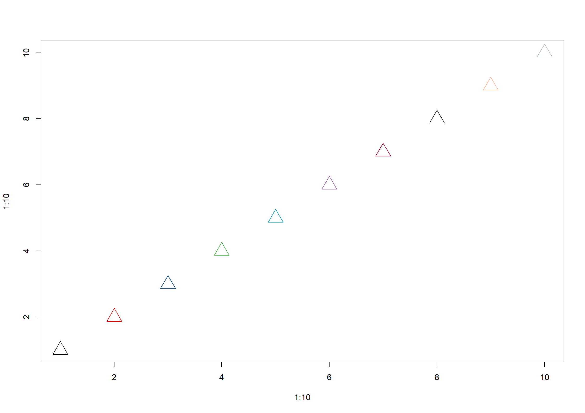
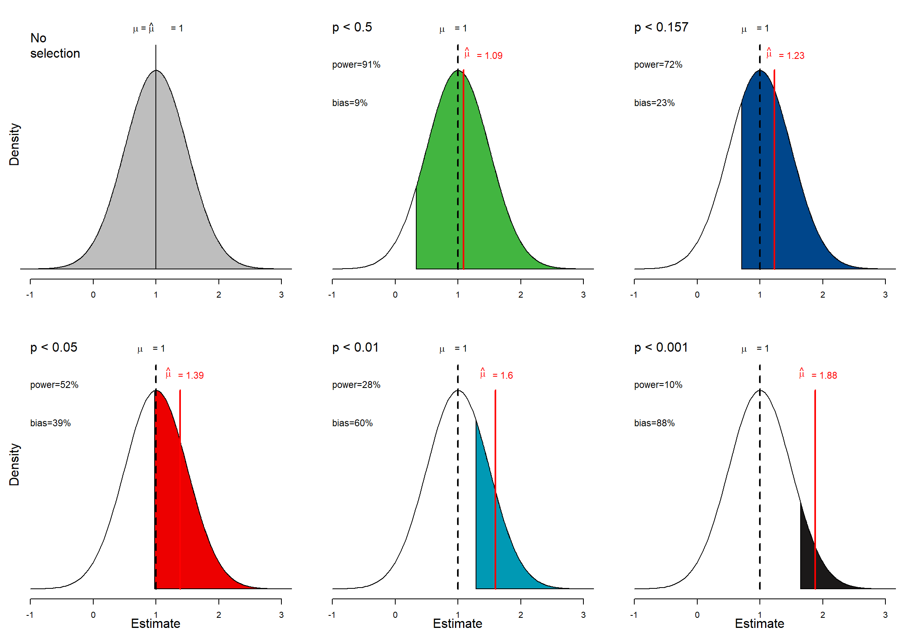
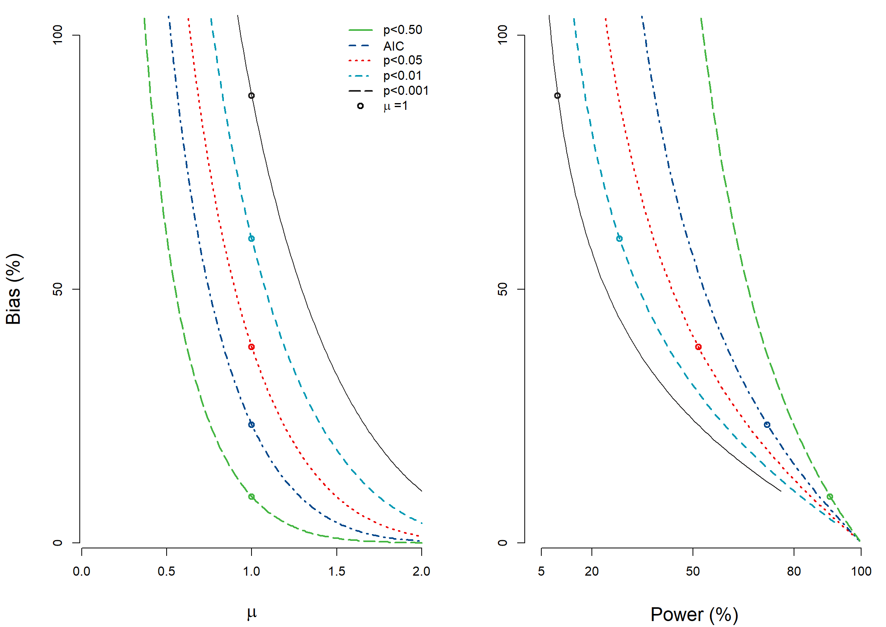
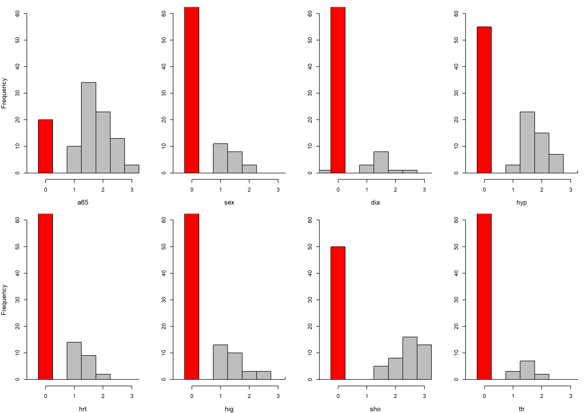
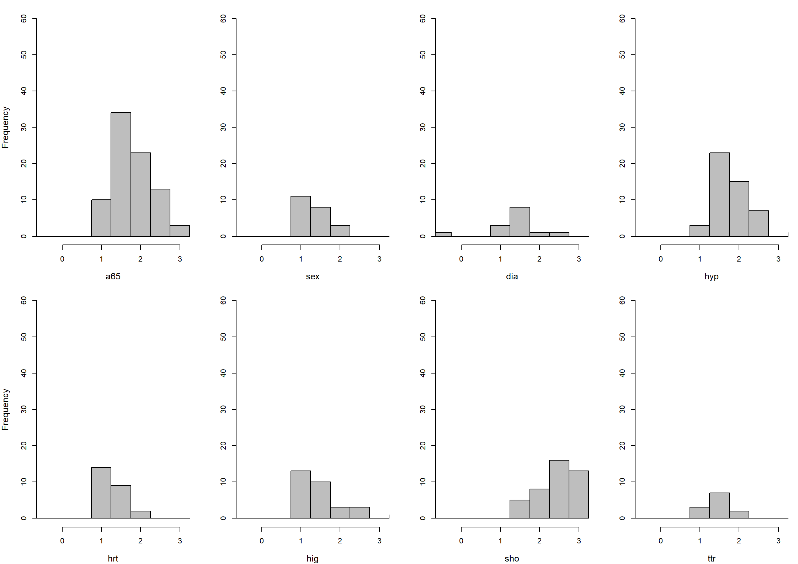
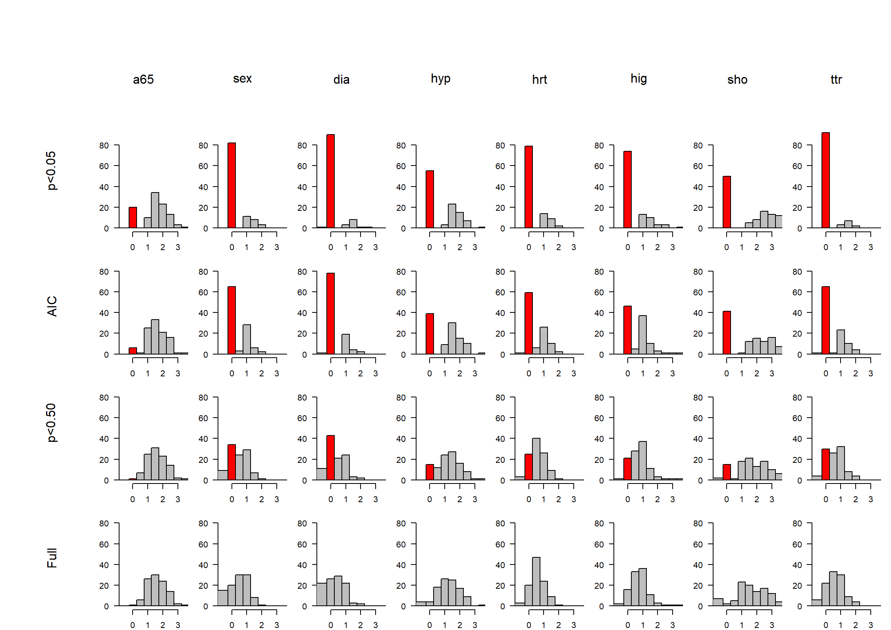
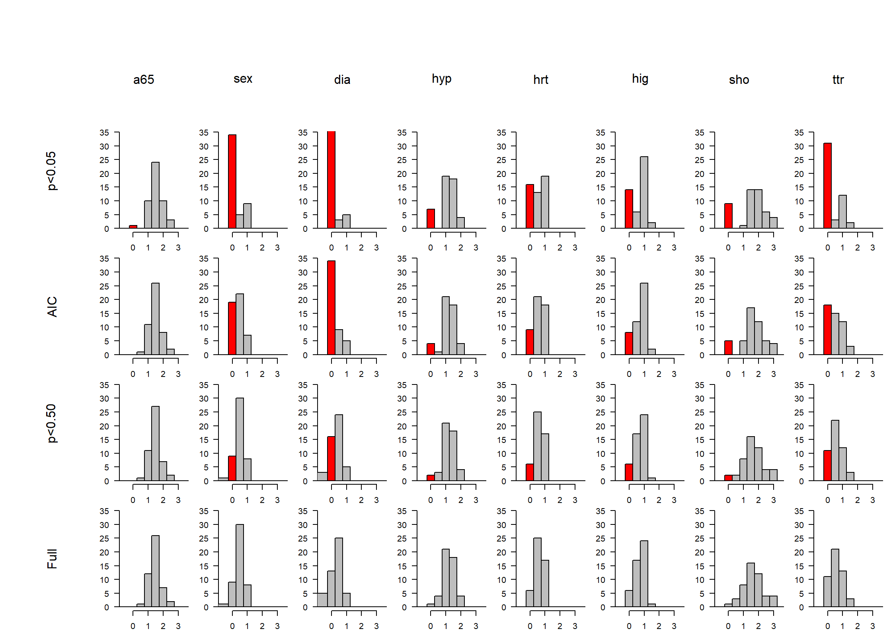

Code show/hide
# Chapter 11 Selection
library(rms)
library(foreign)
mycolors <- c(
"black" = 1, "Red" = "#ED0000", "CongressBlue" = "#00468B",
"Apple" = "#42B540", "BondiBlue" = "#0099B4", "TrendyPink" = "#925E9F",
"Carmine" = "#AD002A", "CodGray" = "#1B1919", "MonaLisa" = "#FDAF91", "Edward" = "#ADB6B6"
)
plot(x = 1:10, y = 1:10, pch = 2, cex = 3, col = mycolors)
Code show/hide
# Theory: bias by p-value
# mycolor 4 green, 3= blue; 2 = red; 5 light blue, 8 is dark
#####################
# What if mu=1 and SE=0.5?
dataOR <- matrix(nrow = 4, ncol = 3)
colnames(dataOR) <- Cs(out, sex, w)
# search weights trial and error ..
dataOR[1, ] <- c(0, 0, 22)
dataOR[2, ] <- c(0, 1, 13)
dataOR[3, ] <- c(1, 0, 13)
dataOR[4, ] <- c(1, 1, 22)
lrm(out ~ sex, weights = w, data = as.data.frame(dataOR)) # coef 1.05, SE 0.49Logistic Regression Model
lrm(formula = out ~ sex, data = as.data.frame(dataOR), weights = w)
Sum of Weights by Response Category
0 1
35 35
Model Likelihood Discrimination Rank Discrim.
Ratio Test Indexes Indexes
Obs 4 LR chi2 4.68 R2 0.086 C 0.629
0 2 d.f. 1 R2(1,70) 0.051 Dxy 0.257
1 2 Pr(> chi2) 0.0305 R2(1,52.5)0.068 gamma 0.482
Sum of weights 70 Brier 0.233 tau-a 0.175
max |deriv| 3e-10
Coef S.E. Wald Z Pr(>|Z|)
Intercept -0.5261 0.3498 -1.50 0.1326
sex 1.0522 0.4947 2.13 0.0334 Code show/hide
# search weights trial and error for OR=exp(.5)=1.65
exp(0.5)[1] 1.648721Code show/hide
dataOR[1, ] <- c(0, 0, 79)
dataOR[2, ] <- c(0, 1, 61)
dataOR[3, ] <- c(1, 0, 61)
dataOR[4, ] <- c(1, 1, 79)
lrm(out ~ sex, weights = w, data = as.data.frame(dataOR)) # coef 0.52, SE 0.24Logistic Regression Model
lrm(formula = out ~ sex, data = as.data.frame(dataOR), weights = w)
Sum of Weights by Response Category
0 1
140 140
Model Likelihood Discrimination Rank Discrim.
Ratio Test Indexes Indexes
Obs 4 LR chi2 4.64 R2 0.022 C 0.564
0 2 d.f. 1 R2(1,280)0.013 Dxy 0.129
1 2 Pr(> chi2) 0.0312 R2(1,210)0.017 gamma 0.253
Sum of weights280 Brier 0.246 tau-a 0.086
max |deriv| 5e-14
Coef S.E. Wald Z Pr(>|Z|)
Intercept -0.2586 0.1704 -1.52 0.1293
sex 0.5171 0.2410 2.15 0.0319 Code show/hide
#####################
## Selection; make some functions
mean.tnorm <- function(mu, sd, lower, upper) {
## return the expectation of a truncated normal distribution
lower.std <- (lower - mu) / sd
upper.std <- (upper - mu) / sd
mean <- mu + sd * (dnorm(lower.std) - dnorm(upper.std)) /
(pnorm(upper.std) - pnorm(lower.std))
return(mean)
}
## mean = 1, SE=0.5, range -3, 5
effect.graph <- function(mu = 1, p = 0.05, roundp = 2, roundpower = 2, roundbias = 2, color = "red", xline = 1.3) {
plot(function(x) dnorm(x, mean = mu, sd = .5, log = F), -1, 3,
ylim = c(0, 1), bty = "n",
xlab = "", yaxt = "n", ylab = ""
)
text(expression(mu), x = .7, y = 0.96, adj = 0, cex = 1.1)
text(paste("=", mu), x = .95, y = 0.97, adj = 0, cex = 1.1)
# Polygon for p<...
x5 <- qnorm(p = (1 - p / 2), mean = 0, sd = .5, lower.tail = TRUE, log.p = FALSE)
xpol <- seq(x5, 4, by = 0.01)
ypol <- dnorm(x = xpol, mean = mu, sd = .5, log = F)
xpol <- c(x5, xpol, 4)
ypol <- c(0, ypol, 0)
polygon(xpol, ypol, col = color)
# no lower tail
# Line for estimates + text
lines(x = c(mu, mu), y = c(0, .9), lty = 2, lwd = 2)
Mean.sel <- mean.tnorm(mu = mu, sd = .5, lower = x5, upper = 5)
lines(x = rep(Mean.sel, 2), y = c(0, .8), lty = 1, lwd = 2, col = "red")
text(expression(hat(mu)), x = xline, y = .87, col = "red", adj = 0, cex = 1.1)
text(paste("=", round(Mean.sel, 2)), x = xline + 0.2, y = 0.86, col = "red", adj = 0, cex = 1.1)
text(paste("p <", round(p, roundp)), x = -1, y = 0.97, adj = 0, cex = 1.5)
text(paste("power=", 100 * round(pnorm(x5, mean = 1, sd = .5, lower.tail = F), roundpower), "%", sep = ""), x = -1, y = 0.82, adj = 0, cex = 1.1) # 1 sided p-value --> power
text(paste("bias=", 100 * round((Mean.sel - mu) / mu, roundbias), "%", sep = ""), x = -1, y = 0.67, adj = 0, cex = 1.1)
} # End effect graph
# Start with p<.5, etc
par(mfrow = c(2, 3), mar = c(4, 2, 1, 1))
plot(function(x) dnorm(x, mean = 1, sd = .5, log = F), -1, 3,
ylim = c(0, 1), bty = "n",
xlab = "", yaxt = "n", ylab = ""
)
mtext(side = 2, line = 0, "Density")
xpol <- seq(-4, 6, by = 0.01)
ypol <- dnorm(x = xpol, mean = 1, sd = .5, log = F)
xpol <- c(-4, xpol, 6)
ypol <- c(0, ypol, 0)
polygon(xpol, ypol, col = "gray")
lines(x = c(1, 1), y = c(0, .9), lty = 1)
text(expression(mu ~ "=" ~ hat(mu)), x = 0.8, y = 0.97, cex = 1.1)
text(" = 1", x = 1.2, y = 0.97, adj = 0, cex = 1.1)
text("No\nselection", x = -1, y = 0.9, adj = 0, cex = 1.5)
## End under the NULL
effect.graph(mu = 1, p = 0.50, color = mycolors[4], xline = 1.1)
effect.graph(mu = 1, p = 0.157, roundp = 3, color = mycolors[3], xline = 1.1)
effect.graph(mu = 1, p = 0.05, roundp = 2, color = mycolors[2], xline = 1.15)
mtext(side = 1, line = 2, "Estimate")
mtext(side = 2, line = 0, "Density")
effect.graph(mu = 1, p = 0.01, roundp = 2, color = mycolors[5], xline = 1.35)
mtext(side = 1, line = 2, "Estimate")
effect.graph(mu = 1, p = 0.001, roundp = 3, color = mycolors[8], xline = 1.62)
mtext(side = 1, line = 2, "Estimate")
Code show/hide
## END Graph testimation bias; mean > NULL ##
#############################################
## Relation between power and bias ##
## Selection; make some functions
mean.tnorm <- function(mu, sd, lower, upper) {
## return the expectation of a truncated normal distribution
lower.std <- (lower - mu) / sd
upper.std <- (upper - mu) / sd
mean <- mu + sd * (dnorm(lower.std) - dnorm(upper.std)) /
(pnorm(upper.std) - pnorm(lower.std))
return(mean)
}
power.bias <- function(mu = 1, sd = .5, p = 0.05, roundbias = 3, roundpower = 3) {
x5 <- qnorm(p = (1 - p / 2), mean = 0, sd = .5, lower.tail = TRUE, log.p = FALSE)
Mean.sel <- mean.tnorm(mu = mu, sd = sd, lower = x5, upper = 5)
power <- 100 * round(pnorm(x5, mean = mu, sd = sd, lower.tail = F), roundpower)
bias <- 100 * round((Mean.sel - mu) / mu, roundbias)
return(c(power, bias))
} # end function
# Calculate power by p-value
pseq <- seq(0.001, .90, .001)
power.bias.mat2 <- matrix(nrow = length(pseq), ncol = 2)
colnames(power.bias.mat2) <- Cs(power, bias)
for (i in 1:length(pseq)) {
power.bias.mat2[i, ] <- power.bias(p = pseq[i])
}
# Power by mu
museq <- seq(0.1, 2, .01)
power.bias.mat <- matrix(nrow = length(museq), ncol = 3)
colnames(power.bias.mat) <- Cs(mu, power, bias)
for (i in 1:length(museq)) {
power.bias.mat[i, ] <- c(museq[i], power.bias(p = 0.05, mu = museq[i]))
}
## Relation between mu and bias
for (i in 1:length(museq)) power.bias.mat[i, ] <- c(museq[i], power.bias(p = 0.001, mu = museq[i]))
power.bias.mat001 <- power.bias.mat # p=0.001
for (i in 1:length(museq)) power.bias.mat[i, ] <- c(museq[i], power.bias(p = 0.01, mu = museq[i]))
power.bias.mat01 <- power.bias.mat # p=0.01
for (i in 1:length(museq)) power.bias.mat[i, ] <- c(museq[i], power.bias(p = 0.05, mu = museq[i]))
power.bias.mat05 <- power.bias.mat # p=0.05
for (i in 1:length(museq)) power.bias.mat[i, ] <- c(museq[i], power.bias(p = 0.157, mu = museq[i]))
power.bias.mat157 <- power.bias.mat # p=0.157
for (i in 1:length(museq)) power.bias.mat[i, ] <- c(museq[i], power.bias(p = 0.5, mu = museq[i]))
power.bias.mat50 <- power.bias.mat # p=0.50
## 5 sets of power and bias
par(mfrow = c(1, 2), mar = c(4.2, 4.5, 1, .5))
plot(
x = power.bias.mat001[, 1], y = power.bias.mat001[, 3], type = "l", col = mycolors[8],
axes = F, xlim = c(0, 2), ylim = c(0, 100), xlab = expression(mu), ylab = "Bias (%)", cex.lab = 1.5
)
axis(1, at = c(0, .5, 1, 1.5, 2), pos = -1)
axis(2, at = c(0, 50, 100), pos = -.01)
lines(x = power.bias.mat01[, 1], y = power.bias.mat01[, 3], type = "l", lty = 2, lwd = 2, col = mycolors[5])
lines(x = power.bias.mat05[, 1], y = power.bias.mat05[, 3], type = "l", lty = 3, lwd = 2, col = mycolors[2])
lines(x = power.bias.mat157[, 1], y = power.bias.mat157[, 3], type = "l", lty = 4, lwd = 2, col = mycolors[3])
lines(x = power.bias.mat50[, 1], y = power.bias.mat50[, 3], type = "l", lty = 5, lwd = 2, col = mycolors[4])
points(x = power.bias.mat001[91, 1], y = power.bias.mat001[91, 3], pch = 1, lwd = 2, col = mycolors[8])
points(x = power.bias.mat01[91, 1], y = power.bias.mat01[91, 3], pch = 1, lwd = 2, col = mycolors[5])
points(x = power.bias.mat05[91, 1], y = power.bias.mat05[91, 3], pch = 1, lwd = 2, col = mycolors[2])
points(x = power.bias.mat157[91, 1], y = power.bias.mat157[91, 3], pch = 1, lwd = 2, col = mycolors[3])
points(x = power.bias.mat50[91, 1], y = power.bias.mat50[91, 3], pch = 1, lwd = 2, col = mycolors[4])
legend("topright",
lty = c(1:5, NA), pch = c(rep(NA, 5), 1), legend = c("p<0.50", "AIC", "p<0.05", "p<0.01", "p<0.001", expression(mu ~ "=1")),
col = mycolors[c(4, 3, 2, 5, 8, 1)], lwd = 2, bty = "n"
)
## End plot bias vs mu
## Relation between power and bias
power.bias.mat <- matrix(nrow = length(museq), ncol = 2)
colnames(power.bias.mat) <- Cs(power, bias)
for (i in 1:length(museq)) power.bias.mat[i, ] <- power.bias(p = 0.001, mu = museq[i])
power.bias.mat001 <- power.bias.mat # p=0.001
for (i in 1:length(museq)) power.bias.mat[i, ] <- power.bias(p = 0.01, mu = museq[i])
power.bias.mat01 <- power.bias.mat # p=0.01
for (i in 1:length(museq)) power.bias.mat[i, ] <- power.bias(p = 0.05, mu = museq[i])
power.bias.mat05 <- power.bias.mat # p=0.05
for (i in 1:length(museq)) power.bias.mat[i, ] <- power.bias(p = 0.157, mu = museq[i])
power.bias.mat157 <- power.bias.mat # p=0.157
for (i in 1:length(museq)) power.bias.mat[i, ] <- power.bias(p = 0.5, mu = museq[i])
power.bias.mat50 <- power.bias.mat # p=0.50
## 5 sets of power and bias
plot(
x = power.bias.mat001[, 1], y = power.bias.mat001[, 2], type = "l", col = mycolors[8],
axes = F, xlim = c(0, 101), ylim = c(0, 100), xlab = "Power (%)", ylab = "", cex.lab = 1.5
)
axis(1, at = c(5, 20, 50, 80, 100), pos = -1)
axis(2, at = c(0, 50, 100), pos = 0)
lines(x = power.bias.mat01[, 1], y = power.bias.mat01[, 2], type = "l", lty = 2, lwd = 2, col = mycolors[5])
lines(x = power.bias.mat05[, 1], y = power.bias.mat05[, 2], type = "l", lty = 3, lwd = 2, col = mycolors[2])
lines(x = power.bias.mat157[, 1], y = power.bias.mat157[, 2], type = "l", lty = 4, lwd = 2, col = mycolors[3])
lines(x = power.bias.mat50[, 1], y = power.bias.mat50[, 2], type = "l", lty = 5, lwd = 2, col = mycolors[4])
points(x = power.bias.mat001[91, 1], y = power.bias.mat001[91, 2], pch = 1, lwd = 2, col = mycolors[8])
points(x = power.bias.mat01[91, 1], y = power.bias.mat01[91, 2], pch = 1, lwd = 2, col = mycolors[5])
points(x = power.bias.mat05[91, 1], y = power.bias.mat05[91, 2], pch = 1, lwd = 2, col = mycolors[2])
points(x = power.bias.mat157[91, 1], y = power.bias.mat157[91, 2], pch = 1, lwd = 2, col = mycolors[3])
points(x = power.bias.mat50[91, 1], y = power.bias.mat50[91, 2], pch = 1, lwd = 2, col = mycolors[4])
Code show/hide
## End plot bias vs power
#############################
###################
## GUSTO results ##
###################
#gusto <- read.csv("/Users/esteyerberg/Documents/Externe harde schijf/Old projects/DUKE/Califf/gusto.csv")[, -1]
#getHdata(gusto) # loads 'gusto' data frame from Vanderbilt's server via Hmisc
#load(url('http://hbiostat.org/data/repo/gusto.rda')) # yess, abd https://hbiostat.org/data/
gusto <- read.csv("data/gusto1.csv")
colnames(gusto) <- tolower(colnames(gusto))
n <- 121
SmallR <- matrix(
data = 0, nrow = n, ncol = 5 * 8,
dimnames = list(1:n, Cs(
a65, sex, dia, hyp, hrt, hig, sho, ttr,
a65s05, sexs05, dias05, hyps05, hrts05, higs05, shos05, ttrs05,
a65AIC, sexAIC, diaAIC, hypAIC, hrtAIC, higAIC, shoAIC, ttrAIC,
a65s50, sexs50, dias50, hyps50, hrts50, higs50, shos50, ttrs50,
SEa65s05, SEsexs05, SEdias05, SEhyps05, SEhrts05, SEhigs05, SEshos05, SEttrs05
))
)
SmallR[1, ] a65 sex dia hyp hrt hig sho ttr
0 0 0 0 0 0 0 0
a65s05 sexs05 dias05 hyps05 hrts05 higs05 shos05 ttrs05
0 0 0 0 0 0 0 0
a65AIC sexAIC diaAIC hypAIC hrtAIC higAIC shoAIC ttrAIC
0 0 0 0 0 0 0 0
a65s50 sexs50 dias50 hyps50 hrts50 higs50 shos50 ttrs50
0 0 0 0 0 0 0 0
SEa65s05 SEsexs05 SEdias05 SEhyps05 SEhrts05 SEhigs05 SEshos05 SEttrs05
0 0 0 0 0 0 0 0 Code show/hide
for (i in 1:n) {
cat(i, "")
gustoi <- gusto[gusto$grps == i, ]
if (nrow(gustoi[gustoi$day30 == 1 & gustoi$sho == 1, ]) > 0 &
nrow(gustoi[gustoi$day30 == 0 & gustoi$sho == 1, ]) > 0) {
# cat("data available")
fitf <- lrm(day30 ~ a65 + sex + dia + hyp + hrt + hig + sho + ttr, data = gustoi, x = T, y = T, maxit = 50)
if (fitf$fail) {} else {
# Full model all coefs
SmallR[i, 1:8] <- fitf$coef[2:9]
# p<0.05 selection
bwsel <- fastbw(fitf, rule = "p", type = "individual", sls = .05)
fitbw <- lrm.fit(y = fitf$y, x = as.matrix(fitf$x[, bwsel$factors.kept]))
SmallR[i, 8 + bwsel$factors.kept] <- fitbw$coef[-1]
# Asymptotic SE
SmallR[i, (4 * 8) + bwsel$factors.kept] <- sqrt(diag(vcov(fitbw))[-1])
# AIC selection
bwsel <- fastbw(fitf, rule = "aic", type = "individual")
fitbw <- lrm.fit(y = fitf$y, x = as.matrix(fitf$x[, bwsel$factors.kept]))
SmallR[i, (2 * 8) + bwsel$factors.kept] <- fitbw$coef[-1]
# p<0.5 selection
bwsel <- fastbw(fitf, rule = "p", type = "individual", sls = 0.5)
fitbw <- lrm.fit(y = fitf$y, x = as.matrix(fitf$x[, bwsel$factors.kept]))
SmallR[i, (3 * 8) + bwsel$factors.kept] <- fitbw$coef[-1]
} # End fail else
} # End if nrow>0
} # End for loop over i1 2 3 4 5 6 7 8 9 10 11 12 13 14 15 16 17 18 19 20 21 22 23 24 25 26 27 28 29 30 31 32 33 34 35 36 37 38 39 40 41 42 43 44 45 46 47 48 49 50 51 52 53 54 55 56 57 58 59 60 61 62 63 64 65 66 67 68 69 70 71 72 73 74 75 76 77 78 79 80 81 82 83 84 85 86 87 88 89 90 91 92 93 94 95 96 97 98 99 100 101 102 103 104 105 106 107 108 109 110 111 112 113 114 115 116 117 118 119 120 121 Code show/hide
SmallR[3, ] a65 sex dia hyp hrt hig sho
1.3683859 1.3804964 -0.2899352 0.6869051 0.2291104 1.3520208 1.3848328
ttr a65s05 sexs05 dias05 hyps05 hrts05 higs05
-0.2785402 1.3931315 1.3729509 0.0000000 0.0000000 0.0000000 1.3494633
shos05 ttrs05 a65AIC sexAIC diaAIC hypAIC hrtAIC
1.6638590 0.0000000 1.3931315 1.3729509 0.0000000 0.0000000 0.0000000
higAIC shoAIC ttrAIC a65s50 sexs50 dias50 hyps50
1.3494633 1.6638590 0.0000000 1.3580576 1.3515495 0.0000000 0.6772603
hrts50 higs50 shos50 ttrs50 SEa65s05 SEsexs05 SEdias05
0.0000000 1.3515704 1.4008246 0.0000000 0.5947099 0.5008381 0.0000000
SEhyps05 SEhrts05 SEhigs05 SEshos05 SEttrs05
0.0000000 0.0000000 0.5631937 0.8005260 0.0000000 Code show/hide
######### Large subsamples ####
n <- 48
LargeR <- matrix(
data = 0, nrow = n, ncol = 4 * 8,
dimnames = list(1:n, Cs(
a65, sex, dia, hyp, hrt, hig, sho, ttr,
a65s05, sexs05, dias05, hyps05, hrts05, higs05, shos05, ttrs05,
a65AIC, sexAIC, diaAIC, hypAIC, hrtAIC, higAIC, shoAIC, ttrAIC,
a65s50, sexs50, dias50, hyps50, hrts50, higs50, shos50, ttrs50
))
)
LargeR[1, ] a65 sex dia hyp hrt hig sho ttr a65s05 sexs05 dias05
0 0 0 0 0 0 0 0 0 0 0
hyps05 hrts05 higs05 shos05 ttrs05 a65AIC sexAIC diaAIC hypAIC hrtAIC higAIC
0 0 0 0 0 0 0 0 0 0 0
shoAIC ttrAIC a65s50 sexs50 dias50 hyps50 hrts50 higs50 shos50 ttrs50
0 0 0 0 0 0 0 0 0 0 Code show/hide
for (i in 1:n) {
cat(i, "")
gustoi <- gusto[gusto$grpl == i, Cs(day30, a65, sex, dia, hyp, hrt, hig, sho, ttr)]
if (nrow(gustoi[gustoi$day30 == 1 & gustoi$sho == 1, ]) > 0 &
nrow(gustoi[gustoi$day30 == 0 & gustoi$sho == 1, ]) > 0) {
fitf <- lrm(day30 ~ a65 + sex + dia + hyp + hrt + hig + sho + ttr, data = gustoi, x = T, y = T, maxit = 50)
if (fitf$fail) {} else {
# Full model all coefs
LargeR[i, 1:8] <- fitf$coef[2:9]
# p<0.05 selection
bwsel <- fastbw(fitf, rule = "p", type = "individual", sls = .05)
fitbw <- lrm.fit(y = fitf$y, x = as.matrix(fitf$x[, bwsel$factors.kept]))
LargeR[i, 8 + bwsel$factors.kept] <- fitbw$coef[-1]
# AIC selection
bwsel <- fastbw(fitf, rule = "aic", type = "individual")
fitbw <- lrm.fit(y = fitf$y, x = as.matrix(fitf$x[, bwsel$factors.kept]))
LargeR[i, (2 * 8) + bwsel$factors.kept] <- fitbw$coef[-1]
# p<0.5 selection
bwsel <- fastbw(fitf, rule = "p", type = "individual", sls = 0.5)
fitbw <- lrm.fit(y = fitf$y, x = as.matrix(fitf$x[, bwsel$factors.kept]))
LargeR[i, (3 * 8) + bwsel$factors.kept] <- fitbw$coef[-1]
} # End fail else
} # End if nrow>0
} # End for loop over i1 2 3 4 5 6 7 8 9 10 11 12 13 14 15 16 17 18 19 20 21 22 23 24 25 26 27 28 29 30 31 32 33 34 35 36 37 38 39 40 41 42 43 44 45 46 47 48 Code show/hide
LargeR[1, ] a65 sex dia hyp hrt hig sho
1.87632429 0.56812197 0.04585692 1.26416541 0.67023921 1.14458752 1.76167786
ttr a65s05 sexs05 dias05 hyps05 hrts05 higs05
0.39653214 1.86994294 0.56661026 0.00000000 1.31306441 0.65943632 1.15347770
shos05 ttrs05 a65AIC sexAIC diaAIC hypAIC hrtAIC
1.78885907 0.00000000 1.86994294 0.56661026 0.00000000 1.31306441 0.65943632
higAIC shoAIC ttrAIC a65s50 sexs50 dias50 hyps50
1.15347770 1.78885907 0.00000000 1.87675931 0.56776765 0.00000000 1.26728773
hrts50 higs50 shos50 ttrs50
0.67382610 1.14551337 1.75805897 0.39984613 Code show/hide
## Print results for illustration
print(round(exp(SmallR[SmallR[, 1] != 0, 1:8]), 1)) a65 sex dia hyp hrt hig sho ttr
3 3.9 4.0 0.7 2.0 1.3 3.9 4.0 0.8
4 11.6 1.4 2.0 12.4 2.1 1.2 9.7 1.0
5 4.0 1.0 0.9 4.0 2.4 2.1 19.3 2.0
7 3.1 1.3 0.2 3.9 5.3 3.5 7.2 2.0
8 12.5 3.3 2.1 2.6 6.4 1.2 4.2 2.2
9 2.5 3.3 1.7 0.7 1.4 38.0 33.8 2.1
11 4.4 0.7 1.1 7.2 1.7 1.7 4.1 1.9
13 12.4 1.2 2.6 2.2 2.5 1.0 3.8 1.0
14 4.6 1.8 2.3 2.9 1.8 1.7 16.5 0.5
15 13.1 1.9 0.0 2.9 3.3 2.3 21.3 1.0
16 14.8 1.8 0.6 2.3 1.8 4.2 9.7 2.4
17 4.7 2.6 1.9 1.8 2.0 2.3 2.6 1.5
18 6.1 0.7 1.2 1.6 2.6 2.5 0.9 2.1
19 4.7 1.1 1.6 3.0 1.8 1.6 3.3 1.3
20 2.2 5.6 2.9 5.6 4.3 2.7 2.2 2.8
22 7.7 7.1 2.5 1.6 1.7 2.4 4.5 1.4
23 8.6 1.3 1.1 15.2 0.9 2.7 25.2 7.1
24 13.6 1.3 2.3 1.2 0.8 0.6 4.5 0.9
26 12.4 0.5 0.8 4.6 1.2 3.8 23.8 2.5
27 5.1 1.2 2.3 4.5 0.7 2.7 12.4 1.6
28 3.0 1.5 1.1 6.9 2.2 2.2 5.6 2.2
29 2.4 2.9 2.3 1.5 2.4 2.3 8.9 0.8
30 2.9 0.7 1.1 1.6 0.4 2.0 19.0 1.6
31 6.6 1.0 0.5 5.4 1.3 2.6 2.2 0.9
32 6.3 1.6 2.1 3.4 1.8 1.4 12.3 4.0
33 8.5 3.1 1.8 2.2 0.8 1.6 2.9 2.3
34 3.0 0.5 1.8 4.9 1.4 1.8 3.7 3.5
35 10.1 0.9 0.9 8.3 3.5 2.9 1.3 2.6
36 7.9 1.1 1.0 3.7 1.4 2.1 15.2 2.4
37 2.7 0.8 1.1 2.0 4.4 0.8 12.0 3.1
38 1.7 0.9 1.1 3.4 1.4 1.6 5.5 1.8
39 6.1 3.0 0.3 6.4 1.2 1.5 0.5 3.5
40 6.1 2.4 0.9 1.3 1.5 1.6 2.6 2.8
42 3.9 2.1 2.6 5.1 1.4 3.4 5.3 0.8
43 4.6 2.5 0.6 2.3 1.6 2.2 12.7 0.4
44 6.2 3.6 0.1 1.8 3.1 3.8 0.4 3.7
46 2.1 0.9 2.3 6.4 2.4 2.6 1.7 0.7
47 4.9 2.1 1.0 4.2 1.1 5.5 8.9 0.9
48 11.7 3.9 3.3 28.8 1.9 1.3 2.9 1.5
49 2.2 0.8 2.5 2.1 1.9 2.4 4.6 3.4
50 5.4 1.5 1.0 1.9 1.8 3.8 4.6 2.6
51 7.2 1.1 0.9 9.1 1.3 3.2 0.7 2.5
52 16.3 3.9 0.6 2.6 5.5 16.4 2.9 1.9
53 3.2 1.9 1.1 0.6 1.2 1.3 9.0 1.0
54 2.1 1.8 1.4 7.8 1.1 2.5 13.3 6.8
55 12.2 0.6 1.5 3.3 2.2 1.7 6.7 5.4
57 2.3 1.3 3.0 3.6 1.6 7.2 10.9 2.3
58 6.5 2.2 0.9 1.4 1.9 2.0 2.4 0.6
59 8.6 1.2 1.4 4.7 1.5 0.8 2.9 1.4
60 2.2 1.9 1.0 2.3 2.1 2.1 6.4 1.6
61 2.7 2.2 0.5 3.0 3.3 5.1 88.8 6.3
62 3.9 1.8 0.8 9.4 1.2 1.8 13.7 5.6
64 1.0 2.2 2.6 4.3 2.1 1.7 5.2 3.0
65 2.3 3.3 2.3 2.0 1.6 1.4 3.4 1.5
66 4.0 1.1 2.6 3.1 0.6 1.0 8.5 0.9
67 5.3 2.4 0.5 10.1 1.8 2.2 2.7 1.0
68 3.5 2.1 2.0 1.7 2.1 1.2 3.3 1.0
69 5.0 3.3 2.0 10.2 1.3 11.2 2.2 1.5
70 7.6 0.7 1.5 5.8 2.9 2.5 0.5 2.1
72 3.8 2.0 0.4 1.7 1.1 1.7 7.8 2.9
73 31.2 0.7 2.5 3.3 1.7 1.0 2.5 1.8
74 3.5 4.3 0.6 4.4 2.8 2.4 13.0 1.9
75 8.5 1.3 0.7 1.8 5.3 3.3 2.3 3.1
76 6.4 1.5 2.0 5.3 3.2 3.0 1.9 3.0
77 4.6 3.3 0.7 3.5 1.4 1.3 10.2 1.6
78 3.3 2.5 2.8 5.9 1.6 5.6 2.4 1.7
79 3.7 1.5 1.6 3.7 2.1 1.8 5.3 1.2
82 5.1 0.6 1.8 2.6 1.3 1.2 6.7 3.3
83 2.9 1.4 6.0 2.6 3.1 1.0 8.3 0.8
84 17.7 0.9 1.4 6.1 4.5 2.0 3.9 1.1
85 5.1 3.4 1.0 1.6 3.1 2.1 4.2 1.3
86 8.7 1.1 1.6 6.7 1.3 2.7 14.1 1.3
87 3.5 3.0 1.7 4.0 1.1 1.6 1.5 2.5
88 3.4 2.6 0.3 9.9 3.3 2.0 3.4 2.7
89 13.0 1.5 3.8 3.1 1.6 2.4 0.3 1.0
90 6.2 1.4 0.8 9.0 4.2 1.6 8.0 1.0
91 6.0 0.6 0.3 3.1 1.3 4.4 3.6 0.9
92 5.1 3.8 0.9 10.6 2.9 2.2 3.6 1.5
93 1.8 1.1 7.7 8.4 2.0 1.8 38.3 4.6
94 4.3 1.5 1.1 15.6 2.0 5.3 3.1 7.7
95 8.5 0.9 2.2 3.2 1.9 3.4 5.8 1.6
96 9.2 2.2 0.8 2.2 1.9 1.2 3.1 2.2
97 3.6 3.0 1.3 3.5 2.0 3.4 18.5 1.1
98 3.1 1.5 2.3 0.6 1.9 0.9 17.2 1.3
99 11.8 1.4 1.6 5.6 1.8 6.9 18.1 2.0
100 2.0 0.5 1.4 4.1 1.4 1.8 24.5 1.2
101 12.6 2.9 1.0 5.1 1.1 0.9 22.5 1.6
102 3.2 1.4 1.9 1.7 3.3 1.5 12.0 4.8
103 2.1 3.0 0.9 1.0 2.1 2.0 1.1 1.4
104 12.3 1.4 1.8 3.0 1.6 2.4 3.3 3.5
105 8.6 2.7 3.6 7.7 1.8 1.2 0.4 2.4
107 3.2 2.1 2.5 3.4 1.6 2.8 15.0 3.8
108 3.4 0.8 0.8 4.4 3.2 1.0 3.9 2.1
109 3.0 4.5 1.4 8.5 0.8 3.9 1.8 1.3
110 5.1 3.3 0.7 4.5 2.4 2.9 8.1 3.3
112 3.7 1.1 2.1 13.5 4.3 1.6 0.2 3.7
113 2.1 2.1 1.7 3.5 1.7 2.0 13.9 2.2
114 2.6 1.7 1.7 0.0 1.5 2.2 3.4 1.8
115 2.6 0.4 3.4 3.6 1.5 2.5 21.9 1.7
117 6.1 1.6 0.8 2.9 2.9 2.1 6.3 3.4
118 3.5 1.8 4.4 1.2 2.6 8.6 2.5 2.8
119 3.4 2.0 0.0 1.4 3.3 1.3 5.2 2.5
120 3.6 0.7 1.6 6.3 1.0 1.6 11.9 1.8
121 8.2 2.5 0.7 10.8 2.1 0.8 51.2 1.0Code show/hide
print(round(exp(SmallR[SmallR[, 1] != 0, (8 + 1):(2 * 8)]), 1)) a65s05 sexs05 dias05 hyps05 hrts05 higs05 shos05 ttrs05
3 4.0 3.9 1.0 1.0 1.0 3.9 5.3 1.0
4 11.7 1.0 1.0 10.9 1.0 1.0 10.3 1.0
5 3.9 1.0 1.0 3.3 1.0 1.0 39.3 1.0
7 1.0 1.0 1.0 1.0 3.6 3.9 12.0 1.0
8 14.5 3.6 1.0 1.0 6.4 1.0 1.0 1.0
9 1.0 3.8 1.0 1.0 1.0 44.3 45.5 1.0
11 4.1 1.0 1.0 5.2 1.0 1.0 6.0 1.0
13 14.5 1.0 1.0 1.0 3.3 1.0 1.0 1.0
14 5.7 1.0 1.0 1.0 1.0 1.0 20.8 1.0
15 14.1 1.0 1.0 1.0 2.2 1.0 37.1 1.0
16 12.8 1.0 1.0 1.0 1.0 4.2 16.8 1.0
17 6.5 1.0 1.0 1.0 1.0 1.0 5.0 1.0
18 5.3 1.0 1.0 1.0 1.0 2.6 1.0 1.0
19 5.5 1.0 1.0 5.1 1.0 1.0 1.0 1.0
20 1.0 6.2 4.0 6.2 4.0 3.3 1.0 1.0
22 7.1 6.5 1.0 1.0 1.0 1.0 14.2 1.0
23 9.9 1.0 1.0 13.4 1.0 1.0 37.1 6.3
24 15.0 1.0 1.0 1.0 1.0 1.0 1.0 1.0
26 8.7 1.0 1.0 1.0 1.0 4.3 23.6 1.0
27 5.1 1.0 1.0 4.3 1.0 2.6 9.9 1.0
28 3.1 1.0 1.0 5.5 1.0 1.0 9.9 1.0
29 1.0 3.6 1.0 1.0 2.9 1.0 12.4 1.0
30 3.0 1.0 1.0 1.0 1.0 1.0 16.3 1.0
31 6.4 1.0 1.0 5.5 1.0 2.6 1.0 1.0
32 7.7 1.0 1.0 1.0 1.0 1.0 24.2 1.0
33 11.2 2.9 1.0 1.0 1.0 1.0 1.0 1.0
34 2.9 1.0 1.0 4.2 1.0 1.0 1.0 3.6
35 9.1 1.0 1.0 8.6 3.2 2.9 1.0 1.0
36 6.7 1.0 1.0 1.0 1.0 1.0 21.1 1.0
37 2.8 1.0 1.0 1.0 4.3 1.0 14.3 3.1
38 1.0 1.0 1.0 3.5 1.0 1.0 8.5 1.0
39 6.8 1.0 1.0 4.3 1.0 1.0 1.0 1.0
40 7.8 1.0 1.0 1.0 1.0 1.0 1.0 1.0
42 4.0 1.0 2.9 4.6 1.0 3.1 5.7 1.0
43 4.8 1.0 1.0 1.0 1.0 1.0 11.8 1.0
44 6.1 3.7 0.1 1.0 2.8 3.4 1.0 3.7
46 1.0 1.0 1.0 4.3 1.0 3.3 1.0 1.0
47 4.8 1.0 1.0 1.0 1.0 5.1 10.7 1.0
48 14.1 3.3 5.0 35.4 1.0 1.0 1.0 1.0
49 1.0 1.0 1.0 1.0 1.0 1.0 9.3 1.0
50 5.4 1.0 1.0 1.0 1.0 4.2 5.7 1.0
51 7.0 1.0 1.0 7.9 1.0 3.2 1.0 1.0
52 15.9 3.4 1.0 1.0 5.7 14.4 1.0 1.0
53 3.8 1.0 1.0 1.0 1.0 1.0 9.7 1.0
54 1.0 1.0 1.0 1.0 1.0 1.0 40.1 1.0
55 9.0 1.0 1.0 1.0 1.0 1.0 1.0 1.0
57 1.0 1.0 3.8 6.0 1.0 8.6 1.0 1.0
58 7.7 1.0 1.0 1.0 1.0 1.0 1.0 1.0
59 9.2 1.0 1.0 4.7 1.0 1.0 1.0 1.0
60 1.0 1.0 1.0 1.0 1.0 1.0 10.2 1.0
61 1.0 1.0 1.0 1.0 1.0 5.2 88.8 6.8
62 4.4 1.0 1.0 7.8 1.0 1.0 14.1 5.5
64 1.0 1.0 3.5 5.1 1.0 1.0 1.0 1.0
65 1.0 4.1 1.0 1.0 1.0 1.0 8.0 1.0
66 4.2 1.0 1.0 1.0 1.0 1.0 13.2 1.0
67 6.7 1.0 1.0 10.8 1.0 1.0 1.0 1.0
68 3.4 2.5 1.0 1.0 1.0 1.0 1.0 1.0
69 5.0 3.4 1.0 8.7 1.0 11.9 1.0 1.0
70 7.7 1.0 1.0 4.7 3.1 1.0 1.0 1.0
72 3.9 1.0 1.0 1.0 1.0 1.0 8.2 1.0
73 31.0 1.0 1.0 3.9 1.0 1.0 1.0 1.0
74 1.0 7.0 1.0 1.0 1.0 1.0 28.8 1.0
75 9.0 1.0 1.0 1.0 4.2 3.1 1.0 1.0
76 7.2 1.0 1.0 5.9 3.9 2.9 1.0 1.0
77 4.8 3.0 1.0 3.5 1.0 1.0 11.0 1.0
78 4.0 1.0 3.1 7.1 1.0 5.1 1.0 1.0
79 4.5 1.0 1.0 4.0 2.7 1.0 1.0 1.0
82 4.8 1.0 1.0 1.0 1.0 1.0 8.8 1.0
83 1.0 1.0 7.3 1.0 1.0 1.0 35.9 1.0
84 16.9 1.0 1.0 9.9 7.1 1.0 1.0 1.0
85 5.2 3.0 1.0 1.0 3.3 1.0 1.0 1.0
86 8.9 1.0 1.0 6.5 1.0 2.8 17.5 1.0
87 3.9 3.0 1.0 5.0 1.0 1.0 1.0 1.0
88 4.6 1.0 1.0 9.3 3.2 1.0 1.0 1.0
89 14.5 1.0 4.0 1.0 1.0 1.0 1.0 1.0
90 7.2 1.0 1.0 9.3 4.7 1.0 1.0 1.0
91 5.5 1.0 1.0 1.0 1.0 4.5 1.0 1.0
92 4.7 3.5 1.0 12.1 2.8 1.0 1.0 1.0
93 1.0 1.0 10.3 7.9 1.0 1.0 38.7 1.0
94 4.3 1.0 1.0 10.0 1.0 5.8 1.0 1.0
95 11.7 1.0 1.0 1.0 1.0 1.0 1.0 1.0
96 8.4 1.0 1.0 1.0 1.0 1.0 8.6 1.0
97 5.0 1.0 1.0 1.0 1.0 1.0 46.4 1.0
98 3.7 1.0 1.0 1.0 1.0 1.0 13.4 1.0
99 12.8 1.0 1.0 5.5 1.0 7.3 21.4 1.0
100 1.0 1.0 1.0 3.8 1.0 1.0 26.5 1.0
101 14.6 1.0 1.0 4.9 1.0 1.0 29.7 1.0
102 3.9 1.0 1.0 1.0 3.5 1.0 17.3 5.0
103 1.0 3.1 1.0 1.0 1.0 1.0 1.0 1.0
104 17.5 1.0 1.0 1.0 1.0 1.0 1.0 4.9
105 7.8 1.0 3.7 4.9 1.0 1.0 1.0 1.0
107 4.1 1.0 3.0 1.0 1.0 1.0 23.6 3.7
108 3.3 1.0 1.0 5.8 3.3 1.0 1.0 1.0
109 3.1 4.5 1.0 8.8 1.0 3.9 1.0 1.0
110 5.0 3.0 1.0 4.5 2.4 2.9 7.9 3.2
112 3.5 1.0 1.0 11.2 4.9 1.0 1.0 3.5
113 1.0 1.0 1.0 4.3 1.0 1.0 16.6 1.0
114 2.9 1.0 1.0 1.0 1.0 1.0 1.0 1.0
115 1.0 1.0 3.8 3.4 1.0 1.0 18.6 1.0
117 5.5 1.0 1.0 1.0 2.8 1.0 1.0 3.9
118 4.2 1.0 4.0 1.0 1.0 9.9 1.0 1.0
119 3.6 1.0 1.0 1.0 2.8 1.0 4.4 1.0
120 3.2 1.0 1.0 5.0 1.0 1.0 15.0 1.0
121 7.6 2.8 1.0 8.2 1.0 1.0 24.9 1.0Code show/hide
print(round(exp(SmallR[SmallR[, 1] != 0, (2 * 8 + 1):(3 * 8)]), 1)) a65AIC sexAIC diaAIC hypAIC hrtAIC higAIC shoAIC ttrAIC
3 4.0 3.9 1.0 1.0 1.0 3.9 5.3 1.0
4 12.1 1.0 1.0 13.2 2.4 1.0 9.5 1.0
5 3.7 1.0 1.0 4.4 2.5 2.1 19.1 1.0
7 2.8 1.0 1.0 4.2 4.6 3.4 8.4 1.0
8 14.5 3.6 1.0 1.0 6.4 1.0 1.0 1.0
9 2.5 3.2 1.0 1.0 1.0 40.9 29.5 1.0
11 4.3 1.0 1.0 6.8 2.0 1.0 4.1 2.1
13 12.3 1.0 2.6 1.0 2.4 1.0 4.3 1.0
14 5.7 1.0 1.0 1.0 1.0 1.0 20.8 1.0
15 14.4 1.0 1.0 3.9 2.9 2.4 16.9 1.0
16 14.2 1.0 1.0 1.0 1.0 4.0 18.3 2.5
17 4.8 2.5 1.0 1.0 1.0 2.3 3.9 1.0
18 5.1 1.0 1.0 1.0 2.3 2.4 1.0 1.0
19 5.5 1.0 1.0 5.2 2.0 1.0 1.0 1.0
20 1.0 6.2 3.4 6.0 4.3 3.4 1.0 3.1
22 7.1 6.5 1.0 1.0 1.0 1.0 14.2 1.0
23 9.3 1.0 1.0 15.1 1.0 2.6 26.0 6.6
24 15.0 1.0 1.0 1.0 1.0 1.0 1.0 1.0
26 9.6 1.0 1.0 3.4 1.0 4.6 19.7 1.0
27 5.0 1.0 2.3 4.3 1.0 2.6 10.5 1.0
28 3.1 1.0 1.0 6.5 2.3 2.2 6.4 1.0
29 2.4 3.0 2.3 1.0 2.4 2.3 9.1 1.0
30 2.9 1.0 1.0 1.0 0.3 2.0 21.2 1.0
31 6.4 1.0 1.0 5.5 1.0 2.6 1.0 1.0
32 7.4 1.0 2.4 3.1 1.0 1.0 12.5 3.8
33 11.2 2.9 1.0 1.0 1.0 1.0 1.0 1.0
34 2.6 1.0 1.0 4.2 1.0 2.1 3.3 3.7
35 10.1 1.0 1.0 8.0 3.6 3.0 1.0 2.7
36 8.0 1.0 1.0 3.7 1.0 2.2 15.7 2.4
37 2.8 1.0 1.0 1.0 4.3 1.0 14.3 3.1
38 1.0 1.0 1.0 3.5 1.0 1.0 8.5 1.0
39 6.0 2.5 1.0 4.8 1.0 1.0 1.0 3.2
40 6.4 2.4 1.0 1.0 1.0 1.0 1.0 3.0
42 3.7 2.2 2.7 4.7 1.0 3.4 5.2 1.0
43 4.4 2.2 1.0 1.0 1.0 2.2 14.7 0.4
44 6.1 3.7 0.1 1.0 2.8 3.4 1.0 3.7
46 2.1 1.0 2.3 6.3 2.5 2.6 1.0 1.0
47 4.9 2.1 1.0 3.9 1.0 5.5 9.3 1.0
48 14.1 3.3 5.0 35.4 1.0 1.0 1.0 1.0
49 1.0 1.0 2.3 1.0 1.0 2.9 8.3 3.5
50 5.5 1.0 1.0 1.0 1.0 4.2 5.4 2.8
51 7.0 1.0 1.0 8.2 1.0 3.2 1.0 2.6
52 15.1 3.3 1.0 4.4 5.5 16.1 1.0 1.0
53 3.8 1.0 1.0 1.0 1.0 1.0 9.7 1.0
54 2.6 1.0 1.0 7.7 1.0 2.3 17.1 7.1
55 10.1 1.0 1.0 3.5 2.7 1.0 1.0 5.0
57 2.1 1.0 3.4 3.9 1.0 7.2 7.2 1.0
58 6.5 2.2 1.0 1.0 1.0 2.3 1.0 1.0
59 9.2 1.0 1.0 4.7 1.0 1.0 1.0 1.0
60 2.5 1.0 1.0 1.0 1.0 1.0 9.8 1.0
61 2.9 1.0 1.0 1.0 2.8 3.9 140.1 7.5
62 4.4 1.0 1.0 7.8 1.0 1.0 14.1 5.5
64 1.0 2.1 2.6 3.9 2.3 1.0 5.5 3.0
65 2.3 3.0 2.4 1.0 1.0 1.0 6.4 1.0
66 4.2 1.0 2.5 3.5 1.0 1.0 8.5 1.0
67 5.2 2.3 1.0 11.1 1.0 2.4 1.0 1.0
68 3.7 2.3 1.0 1.0 2.2 1.0 4.0 1.0
69 4.7 3.1 2.1 9.6 1.0 10.5 1.0 1.0
70 7.2 1.0 1.0 5.0 2.7 2.6 1.0 1.0
72 3.7 1.8 1.0 1.0 1.0 1.0 5.6 2.9
73 32.2 1.0 2.6 4.1 1.0 1.0 1.0 2.2
74 3.3 4.0 1.0 5.2 3.0 2.4 11.8 1.0
75 9.3 1.0 1.0 1.0 5.0 3.2 1.0 2.9
76 6.5 1.0 2.2 5.8 3.2 3.1 1.0 2.9
77 4.8 3.0 1.0 3.5 1.0 1.0 11.0 1.0
78 3.2 2.2 3.0 7.1 1.0 5.7 1.0 1.0
79 4.5 1.0 1.0 4.0 2.7 1.0 1.0 1.0
82 4.9 1.0 1.0 1.0 1.0 1.0 6.9 3.5
83 3.0 1.0 6.6 1.0 2.8 1.0 16.0 1.0
84 16.9 1.0 1.0 9.9 7.1 1.0 1.0 1.0
85 5.4 3.1 1.0 1.0 2.9 2.3 1.0 1.0
86 8.9 1.0 1.0 6.5 1.0 2.8 17.5 1.0
87 3.9 3.0 1.0 5.0 1.0 1.0 1.0 1.0
88 4.1 2.6 1.0 11.0 3.6 1.0 1.0 3.0
89 13.4 1.0 3.8 2.5 1.0 2.3 1.0 1.0
90 6.5 1.0 1.0 8.4 4.5 1.0 6.4 1.0
91 5.2 1.0 1.0 3.2 1.0 4.6 1.0 1.0
92 5.1 3.8 1.0 11.8 2.8 2.2 1.0 1.0
93 1.0 1.0 8.5 8.7 2.3 1.0 41.1 5.1
94 4.5 1.0 1.0 15.2 2.0 5.0 1.0 7.2
95 9.0 1.0 1.0 1.0 1.0 3.4 7.4 1.0
96 8.5 2.2 1.0 1.0 1.0 1.0 6.5 2.3
97 4.2 2.7 1.0 1.0 1.0 3.1 37.4 1.0
98 3.2 1.0 2.4 1.0 1.9 1.0 13.3 1.0
99 12.8 1.0 1.0 5.5 1.0 7.3 21.4 1.0
100 1.0 1.0 1.0 3.7 1.0 2.2 26.5 1.0
101 11.2 2.8 1.0 4.6 1.0 1.0 23.8 1.0
102 3.9 1.0 1.0 1.0 3.5 1.0 17.3 5.0
103 2.1 2.9 1.0 1.0 2.0 2.0 1.0 1.0
104 15.0 1.0 1.0 2.9 1.0 2.9 3.8 3.6
105 7.5 2.2 3.7 5.9 1.0 1.0 1.0 1.0
107 3.3 2.1 2.5 3.2 1.0 2.9 19.5 3.7
108 3.2 1.0 1.0 4.6 3.1 1.0 3.9 2.1
109 3.1 4.5 1.0 8.8 1.0 3.9 1.0 1.0
110 5.0 3.0 1.0 4.5 2.4 2.9 7.9 3.2
112 3.5 1.0 1.0 11.2 4.9 1.0 1.0 3.5
113 2.3 1.0 1.0 4.4 1.0 1.0 18.9 1.0
114 2.7 1.0 1.0 1.0 1.0 2.1 1.0 1.0
115 2.2 1.0 3.2 3.3 1.0 2.7 20.6 1.0
117 5.8 1.0 1.0 2.9 2.9 2.0 1.0 3.4
118 3.8 1.0 4.6 1.0 2.6 8.6 1.0 2.6
119 3.9 1.0 1.0 1.0 3.1 1.0 4.8 2.5
120 3.2 1.0 1.0 5.0 1.0 1.0 15.0 1.0
121 7.7 2.6 1.0 9.7 2.0 1.0 34.2 1.0Code show/hide
print(round(exp(SmallR[SmallR[, 1] != 0, (3 * 8 + 1):(4 * 8)]), 1)) a65s50 sexs50 dias50 hyps50 hrts50 higs50 shos50 ttrs50
3 3.9 3.9 1.0 2.0 1.0 3.9 4.1 1.0
4 12.2 1.0 2.0 12.4 2.3 1.0 10.3 1.0
5 3.9 1.0 1.0 4.0 2.4 2.1 19.0 1.9
7 3.2 1.0 0.2 4.2 5.4 3.4 7.8 2.0
8 12.8 3.3 2.1 2.6 6.7 1.0 4.2 2.2
9 2.4 3.1 1.8 1.0 1.0 41.2 33.1 2.0
11 4.4 0.7 1.0 7.3 1.8 1.7 4.2 1.9
13 12.3 1.0 2.6 1.0 2.4 1.0 4.3 1.0
14 4.6 1.8 2.3 2.9 1.8 1.7 16.5 0.5
15 13.6 1.4 1.0 3.9 2.7 2.4 16.4 1.0
16 15.1 1.7 1.0 2.3 1.9 4.1 9.3 2.3
17 4.7 2.6 1.9 1.8 2.0 2.3 2.6 1.5
18 5.4 1.0 1.0 1.7 2.4 2.6 1.0 2.0
19 4.8 1.0 1.7 2.9 1.8 1.6 3.4 1.0
20 2.2 5.6 2.9 5.6 4.3 2.7 2.2 2.8
22 7.4 6.8 2.3 1.0 1.7 2.4 5.9 1.0
23 9.3 1.0 1.0 15.1 1.0 2.6 26.0 6.6
24 15.0 1.0 2.4 1.0 1.0 0.6 4.1 1.0
26 12.1 0.5 1.0 4.7 1.0 3.9 21.8 2.5
27 5.2 1.0 2.3 4.4 0.7 2.7 13.1 1.6
28 3.0 1.5 1.0 6.8 2.3 2.2 5.7 2.2
29 2.4 3.0 2.3 1.0 2.4 2.3 9.1 1.0
30 2.8 1.0 1.0 1.0 0.4 2.0 19.8 1.5
31 6.6 1.0 0.5 5.2 1.0 2.7 2.4 1.0
32 6.3 1.6 2.1 3.4 1.8 1.4 12.3 4.0
33 8.5 3.2 1.8 2.2 1.0 1.5 2.7 2.3
34 3.0 0.5 1.8 4.9 1.4 1.8 3.7 3.5
35 10.1 1.0 1.0 8.0 3.6 3.0 1.0 2.7
36 8.0 1.0 1.0 3.7 1.0 2.2 15.7 2.4
37 2.7 1.0 1.0 2.1 4.1 1.0 11.9 3.1
38 1.7 1.0 1.0 3.3 1.5 1.6 5.6 1.8
39 5.8 3.0 0.3 5.8 1.0 1.5 1.0 3.3
40 6.3 2.6 1.0 1.0 1.5 1.7 1.0 3.0
42 4.0 2.2 2.6 5.1 1.4 3.3 4.8 1.0
43 4.6 2.5 0.6 2.3 1.6 2.2 12.7 0.4
44 6.0 3.5 0.1 1.7 2.9 3.7 1.0 3.6
46 2.1 1.0 2.3 6.7 2.4 2.6 1.0 0.7
47 4.9 2.1 1.0 3.9 1.0 5.5 9.3 1.0
48 12.9 3.6 3.6 27.1 1.9 1.0 3.0 1.0
49 2.1 1.0 2.4 2.0 1.9 2.4 4.5 3.3
50 5.4 1.5 1.0 1.9 1.8 3.8 4.6 2.6
51 7.0 1.0 1.0 8.2 1.0 3.2 1.0 2.6
52 16.3 3.9 0.6 2.6 5.5 16.4 2.9 1.9
53 3.4 1.9 1.0 1.0 1.0 1.0 10.1 1.0
54 2.1 1.8 1.5 7.8 1.0 2.5 13.7 6.8
55 12.2 0.6 1.5 3.3 2.2 1.7 6.7 5.4
57 2.4 1.0 3.1 3.6 1.7 7.0 10.7 2.2
58 6.5 2.1 1.0 1.0 1.8 2.0 2.3 0.6
59 8.7 1.0 1.0 4.9 1.5 1.0 2.9 1.0
60 2.2 1.9 1.0 2.3 2.1 2.1 6.4 1.6
61 2.7 2.2 0.5 3.0 3.3 5.1 88.8 6.3
62 3.9 1.8 1.0 9.2 1.0 1.8 13.5 5.5
64 1.0 2.2 2.6 4.3 2.1 1.7 5.2 3.0
65 2.3 3.2 2.3 2.1 1.7 1.0 3.7 1.5
66 4.1 1.0 2.6 3.2 0.6 1.0 8.8 1.0
67 5.3 2.4 0.5 10.1 1.8 2.2 2.7 1.0
68 3.6 2.1 2.1 1.7 2.1 1.0 3.3 1.0
69 4.9 3.3 2.2 10.1 1.0 11.3 1.0 1.7
70 7.1 1.0 1.0 5.0 2.7 2.5 1.0 1.9
72 3.7 2.0 0.5 1.7 1.0 1.7 7.9 2.9
73 30.2 1.0 2.4 3.3 1.7 1.0 2.5 2.0
74 3.4 4.2 1.0 4.4 2.8 2.3 11.6 1.9
75 9.2 1.0 1.0 1.6 5.2 3.2 1.0 3.0
76 6.4 1.5 2.0 5.3 3.2 3.0 1.9 3.0
77 4.7 3.1 1.0 3.4 1.0 1.0 10.1 1.6
78 3.3 2.5 2.8 5.9 1.6 5.6 2.4 1.7
79 3.8 1.5 1.6 3.9 2.0 1.8 5.5 1.0
82 5.1 0.5 1.9 2.4 1.0 1.0 7.2 3.4
83 3.0 1.0 6.3 2.5 3.1 1.0 9.7 1.0
84 17.1 1.0 1.0 5.8 4.8 2.1 3.8 1.0
85 5.1 3.2 1.0 1.0 2.9 2.2 3.9 1.0
86 9.0 1.0 1.6 6.5 1.0 2.7 15.0 1.0
87 3.6 3.0 1.7 4.3 1.0 1.6 1.0 2.5
88 3.4 2.6 0.3 9.9 3.3 2.0 3.4 2.7
89 13.0 1.5 3.8 3.1 1.6 2.4 0.3 1.0
90 6.4 1.0 1.0 8.7 4.1 1.6 7.5 1.0
91 5.9 0.6 0.4 2.9 1.0 4.5 3.8 1.0
92 5.1 3.7 1.0 10.5 2.9 2.2 3.7 1.5
93 1.8 1.0 7.9 8.6 2.0 1.8 37.7 4.7
94 4.3 1.5 1.0 15.8 2.0 5.3 3.1 7.8
95 8.4 1.0 2.1 3.2 1.9 3.4 5.7 1.6
96 9.3 2.1 1.0 2.2 1.9 1.0 3.3 2.1
97 3.6 3.0 1.0 3.7 2.0 3.3 20.0 1.0
98 2.9 1.5 2.3 1.0 1.9 1.0 13.8 1.0
99 11.8 1.4 1.6 5.6 1.8 6.9 18.1 2.0
100 1.9 0.5 1.5 3.7 1.0 1.8 27.6 1.0
101 12.4 2.9 1.0 5.0 1.0 1.0 23.4 1.6
102 3.4 1.0 1.9 1.6 3.4 1.5 10.9 4.8
103 2.1 3.0 1.0 1.0 2.1 2.0 1.0 1.4
104 13.5 1.0 1.8 3.2 1.6 2.3 3.4 3.4
105 8.3 2.6 3.5 7.3 1.8 1.0 1.0 2.4
107 3.2 2.1 2.5 3.4 1.6 2.8 15.0 3.8
108 3.2 1.0 1.0 4.6 3.1 1.0 3.9 2.1
109 3.1 4.5 1.0 8.8 1.0 3.9 1.0 1.0
110 5.0 3.0 1.0 4.5 2.4 2.9 7.9 3.2
112 3.8 1.0 2.1 13.5 4.3 1.6 0.2 3.7
113 2.1 2.1 1.7 3.5 1.7 2.0 13.9 2.2
114 2.7 1.7 1.8 1.0 1.5 2.1 3.3 1.8
115 2.6 0.4 3.4 3.6 1.5 2.5 21.9 1.7
117 6.0 1.6 1.0 2.8 2.9 2.0 6.0 3.4
118 3.6 1.7 4.4 1.0 2.6 8.8 1.0 2.8
119 3.6 1.9 1.0 1.0 3.1 1.0 5.0 2.4
120 3.6 0.7 1.0 6.0 1.0 1.6 12.3 1.8
121 7.7 2.6 1.0 9.7 2.0 1.0 34.2 1.0Code show/hide
names <- Cs(a65, sex, dia, hyp, hrt, hig, sho, ttr) # names of the 8 vars
# 8 plots for p<0.05 selection: UNconditional
par(mfrow = c(2, 4), mar = c(4.1, 4.1, 1.1, 1.1))
for (i in 1:8) {
xi <- SmallR[SmallR[, 1] != 0, (8 + 1):(2 * 8)]
hist(
x = xi[, i], probability = F, plot = T, ylim = c(0, 60), ylab = ifelse(i == 1 | i == 5, "Frequency", ""),
xlim = c(-0.5, 3.1), xaxp = c(ul = 0, uh = 3, n = 3), xlab = names[i], cex.lab = 1.2, main = "",
breaks = c(-100, -.25, 0.25, 0.75, 1.25, 1.75, 2.25, 2.75, 3.25, 100),
col = c("gray", "red", rep("gray", 5))
)
} # end for loop
Code show/hide
## SE unconditional
round(apply(SmallR[SmallR[, 1] != 0, (8 + 1):(2 * 8)], 2, sd), 2)a65s05 sexs05 dias05 hyps05 hrts05 higs05 shos05 ttrs05
0.87 0.55 0.55 0.97 0.56 0.77 1.45 0.48 Code show/hide
# reduce outliers for sho: -35 out
round(apply(
SmallR[SmallR[, 1] != 0, (8 + 1):(2 * 8)], 2,
function(x) sd(ifelse(x < -10, 0, x), na.rm = T)
), 2)a65s05 sexs05 dias05 hyps05 hrts05 higs05 shos05 ttrs05
0.87 0.55 0.55 0.97 0.56 0.77 1.45 0.48 Code show/hide
# 8 plots for p<0.05 selection: Conditional
par(mfrow = c(2, 4))
for (i in 1:8) {
xi <- SmallR[SmallR[, 1] != 0, (8 + 1):(2 * 8)]
xi <- apply(xi, 2, function(x) ifelse(x == 0, NA, x))
hist(
x = xi[, i], probability = F, plot = T, ylim = c(0, 60), ylab = ifelse(i == 1 | i == 5, "Frequency", ""),
xlim = c(-0.5, 3.1), xaxp = c(ul = 0, uh = 3, n = 3), xlab = names[i], cex.lab = 1.2, main = "",
breaks = c(-100, -.25, 0.25, 0.75, 1.25, 1.75, 2.25, 2.75, 3.25, 100),
col = c("gray", "red", rep("gray", 5))
)
} # end for loop
Code show/hide
## SE conditional
round(apply(
SmallR[SmallR[, 1] != 0, (8 + 1):(2 * 8)], 2,
function(x) sd(ifelse(x == 0 | x < -2, NA, x), na.rm = T)
), 2)a65s05 sexs05 dias05 hyps05 hrts05 higs05 shos05 ttrs05
0.53 0.28 0.36 0.45 0.29 0.62 0.67 0.27 Code show/hide
## Asymptotic SE (conditional)
round(apply(
SmallR[SmallR[, 1] != 0, (4 * 8 + 1):(5 * 8)], 2,
function(x) mean(ifelse(x == 0 | x > 4, NA, x), na.rm = T)
), 2)SEa65s05 SEsexs05 SEdias05 SEhyps05 SEhrts05 SEhigs05 SEshos05 SEttrs05
0.57 0.48 0.55 0.61 0.48 0.59 0.88 0.62 Code show/hide
SmallR[SmallR[, 1] != 0, (8 + 1):(2 * 8)] a65s05 sexs05 dias05 hyps05 hrts05 higs05 shos05 ttrs05
3 1.393131 1.3729509 0.000000 0.000000 0.0000000 1.3494633 1.663859 0.000000
4 2.456897 0.0000000 0.000000 2.390872 0.0000000 0.0000000 2.330232 0.000000
5 1.355458 0.0000000 0.000000 1.189029 0.0000000 0.0000000 3.670716 0.000000
7 0.000000 0.0000000 0.000000 0.000000 1.2764840 1.3584444 2.487963 0.000000
8 2.672190 1.2674880 0.000000 0.000000 1.8486307 0.0000000 0.000000 0.000000
9 0.000000 1.3433244 0.000000 0.000000 0.0000000 3.7899937 3.818351 0.000000
11 1.419581 0.0000000 0.000000 1.655962 0.0000000 0.0000000 1.794680 0.000000
13 2.676826 0.0000000 0.000000 0.000000 1.1819604 0.0000000 0.000000 0.000000
14 1.747978 0.0000000 0.000000 0.000000 0.0000000 0.0000000 3.032981 0.000000
15 2.645991 0.0000000 0.000000 0.000000 0.7880849 0.0000000 3.614088 0.000000
16 2.553243 0.0000000 0.000000 0.000000 0.0000000 1.4425456 2.821458 0.000000
17 1.868137 0.0000000 0.000000 0.000000 0.0000000 0.0000000 1.614302 0.000000
18 1.663241 0.0000000 0.000000 0.000000 0.0000000 0.9443822 0.000000 0.000000
19 1.697282 0.0000000 0.000000 1.629834 0.0000000 0.0000000 0.000000 0.000000
20 0.000000 1.8232720 1.377854 1.825455 1.3774697 1.2020835 0.000000 0.000000
22 1.962371 1.8786261 0.000000 0.000000 0.0000000 0.0000000 2.655666 0.000000
23 2.287843 0.0000000 0.000000 2.592147 0.0000000 0.0000000 3.613764 1.836015
24 2.708050 0.0000000 0.000000 0.000000 0.0000000 0.0000000 0.000000 0.000000
26 2.167366 0.0000000 0.000000 0.000000 0.0000000 1.4588770 3.161598 0.000000
27 1.633472 0.0000000 0.000000 1.452190 0.0000000 0.9706536 2.288021 0.000000
28 1.129305 0.0000000 0.000000 1.698531 0.0000000 0.0000000 2.292643 0.000000
29 0.000000 1.2719573 0.000000 0.000000 1.0587123 0.0000000 2.516981 0.000000
30 1.085455 0.0000000 0.000000 0.000000 0.0000000 0.0000000 2.790945 0.000000
31 1.862585 0.0000000 0.000000 1.710783 0.0000000 0.9738623 0.000000 0.000000
32 2.042448 0.0000000 0.000000 0.000000 0.0000000 0.0000000 3.184700 0.000000
33 2.416467 1.0709292 0.000000 0.000000 0.0000000 0.0000000 0.000000 0.000000
34 1.067437 0.0000000 0.000000 1.424982 0.0000000 0.0000000 0.000000 1.275131
35 2.207521 0.0000000 0.000000 2.153544 1.1480293 1.0701368 0.000000 0.000000
36 1.898426 0.0000000 0.000000 0.000000 0.0000000 0.0000000 3.051559 0.000000
37 1.030306 0.0000000 0.000000 0.000000 1.4663365 0.0000000 2.660950 1.137860
38 0.000000 0.0000000 0.000000 1.240902 0.0000000 0.0000000 2.134510 0.000000
39 1.924246 0.0000000 0.000000 1.449019 0.0000000 0.0000000 0.000000 0.000000
40 2.048632 0.0000000 0.000000 0.000000 0.0000000 0.0000000 0.000000 0.000000
42 1.384090 0.0000000 1.063800 1.525961 0.0000000 1.1447837 1.742184 0.000000
43 1.561406 0.0000000 0.000000 0.000000 0.0000000 0.0000000 2.472130 0.000000
44 1.815598 1.3008489 -2.247012 0.000000 1.0430929 1.2251657 0.000000 1.302497
46 0.000000 0.0000000 0.000000 1.460481 0.0000000 1.1871791 0.000000 0.000000
47 1.572565 0.0000000 0.000000 0.000000 0.0000000 1.6254139 2.366367 0.000000
48 2.643024 1.1955006 1.610136 3.566084 0.0000000 0.0000000 0.000000 0.000000
49 0.000000 0.0000000 0.000000 0.000000 0.0000000 0.0000000 2.233592 0.000000
50 1.681560 0.0000000 0.000000 0.000000 0.0000000 1.4301548 1.740832 0.000000
51 1.945264 0.0000000 0.000000 2.067822 0.0000000 1.1751412 0.000000 0.000000
52 2.764232 1.2206021 0.000000 0.000000 1.7421405 2.6659002 0.000000 0.000000
53 1.346519 0.0000000 0.000000 0.000000 0.0000000 0.0000000 2.275816 0.000000
54 0.000000 0.0000000 0.000000 0.000000 0.0000000 0.0000000 3.690716 0.000000
55 2.194133 0.0000000 0.000000 0.000000 0.0000000 0.0000000 0.000000 0.000000
57 0.000000 0.0000000 1.337487 1.789597 0.0000000 2.1566024 0.000000 0.000000
58 2.041220 0.0000000 0.000000 0.000000 0.0000000 0.0000000 0.000000 0.000000
59 2.214801 0.0000000 0.000000 1.541645 0.0000000 0.0000000 0.000000 0.000000
60 0.000000 0.0000000 0.000000 0.000000 0.0000000 0.0000000 2.319114 0.000000
61 0.000000 0.0000000 0.000000 0.000000 0.0000000 1.6488753 4.486329 1.922901
62 1.480388 0.0000000 0.000000 2.052724 0.0000000 0.0000000 2.648627 1.704991
64 0.000000 0.0000000 1.253037 1.638900 0.0000000 0.0000000 0.000000 0.000000
65 0.000000 1.4209079 0.000000 0.000000 0.0000000 0.0000000 2.075029 0.000000
66 1.427704 0.0000000 0.000000 0.000000 0.0000000 0.0000000 2.581116 0.000000
67 1.902408 0.0000000 0.000000 2.379479 0.0000000 0.0000000 0.000000 0.000000
68 1.223266 0.8992833 0.000000 0.000000 0.0000000 0.0000000 0.000000 0.000000
69 1.614580 1.2237871 0.000000 2.163293 0.0000000 2.4800620 0.000000 0.000000
70 2.037915 0.0000000 0.000000 1.541453 1.1272203 0.0000000 0.000000 0.000000
72 1.354180 0.0000000 0.000000 0.000000 0.0000000 0.0000000 2.109191 0.000000
73 3.433669 0.0000000 0.000000 1.360934 0.0000000 0.0000000 0.000000 0.000000
74 0.000000 1.9504248 0.000000 0.000000 0.0000000 0.0000000 3.360143 0.000000
75 2.201056 0.0000000 0.000000 0.000000 1.4339501 1.1298668 0.000000 0.000000
76 1.978754 0.0000000 0.000000 1.772244 1.3511996 1.0817926 0.000000 0.000000
77 1.576271 1.0990822 0.000000 1.264132 0.0000000 0.0000000 2.401615 0.000000
78 1.383800 0.0000000 1.138511 1.958573 0.0000000 1.6374065 0.000000 0.000000
79 1.512035 0.0000000 0.000000 1.377612 1.0057934 0.0000000 0.000000 0.000000
82 1.560691 0.0000000 0.000000 0.000000 0.0000000 0.0000000 2.170352 0.000000
83 0.000000 0.0000000 1.994262 0.000000 0.0000000 0.0000000 3.581541 0.000000
84 2.824801 0.0000000 0.000000 2.294751 1.9533092 0.0000000 0.000000 0.000000
85 1.656206 1.0963660 0.000000 0.000000 1.2023170 0.0000000 0.000000 0.000000
86 2.187315 0.0000000 0.000000 1.867495 0.0000000 1.0139948 2.861208 0.000000
87 1.370889 1.1105382 0.000000 1.610351 0.0000000 0.0000000 0.000000 0.000000
88 1.516435 0.0000000 0.000000 2.231516 1.1646036 0.0000000 0.000000 0.000000
89 2.676265 0.0000000 1.393798 0.000000 0.0000000 0.0000000 0.000000 0.000000
90 1.975389 0.0000000 0.000000 2.230051 1.5511742 0.0000000 0.000000 0.000000
91 1.700746 0.0000000 0.000000 0.000000 0.0000000 1.5126822 0.000000 0.000000
92 1.548262 1.2502736 0.000000 2.494516 1.0404038 0.0000000 0.000000 0.000000
93 0.000000 0.0000000 2.334055 2.070693 0.0000000 0.0000000 3.655952 0.000000
94 1.447634 0.0000000 0.000000 2.297886 0.0000000 1.7500556 0.000000 0.000000
95 2.458704 0.0000000 0.000000 0.000000 0.0000000 0.0000000 0.000000 0.000000
96 2.133486 0.0000000 0.000000 0.000000 0.0000000 0.0000000 2.148491 0.000000
97 1.617713 0.0000000 0.000000 0.000000 0.0000000 0.0000000 3.837619 0.000000
98 1.300987 0.0000000 0.000000 0.000000 0.0000000 0.0000000 2.598620 0.000000
99 2.552969 0.0000000 0.000000 1.712624 0.0000000 1.9823090 3.065252 0.000000
100 0.000000 0.0000000 0.000000 1.325718 0.0000000 0.0000000 3.277812 0.000000
101 2.678571 0.0000000 0.000000 1.596563 0.0000000 0.0000000 3.390866 0.000000
102 1.360104 0.0000000 0.000000 0.000000 1.2523824 0.0000000 2.852875 1.617917
103 0.000000 1.1356261 0.000000 0.000000 0.0000000 0.0000000 0.000000 0.000000
104 2.864069 0.0000000 0.000000 0.000000 0.0000000 0.0000000 0.000000 1.591937
105 2.055841 0.0000000 1.303024 1.592879 0.0000000 0.0000000 0.000000 0.000000
107 1.414398 0.0000000 1.096044 0.000000 0.0000000 0.0000000 3.159286 1.300297
108 1.202567 0.0000000 0.000000 1.762543 1.1907204 0.0000000 0.000000 0.000000
109 1.127616 1.4971138 0.000000 2.176904 0.0000000 1.3547866 0.000000 0.000000
110 1.616162 1.0918725 0.000000 1.514324 0.8752594 1.0729685 2.066990 1.148049
112 1.244434 0.0000000 0.000000 2.418123 1.5880322 0.0000000 0.000000 1.241731
113 0.000000 0.0000000 0.000000 1.451559 0.0000000 0.0000000 2.810039 0.000000
114 1.055728 0.0000000 0.000000 0.000000 0.0000000 0.0000000 0.000000 0.000000
115 0.000000 0.0000000 1.338161 1.230040 0.0000000 0.0000000 2.922035 0.000000
117 1.701724 0.0000000 0.000000 0.000000 1.0398579 0.0000000 0.000000 1.368316
118 1.430756 0.0000000 1.383149 0.000000 0.0000000 2.2931203 0.000000 0.000000
119 1.287475 0.0000000 0.000000 0.000000 1.0235965 0.0000000 1.473473 0.000000
120 1.166570 0.0000000 0.000000 1.613465 0.0000000 0.0000000 2.708064 0.000000
121 2.034612 1.0377589 0.000000 2.105490 0.0000000 0.0000000 3.216030 0.000000Code show/hide
SmallR[SmallR[, 1] != 0, (4 * 8 + 1):(5 * 8)] SEa65s05 SEsexs05 SEdias05 SEhyps05 SEhrts05 SEhigs05 SEshos05
3 0.5947099 0.5008381 0.0000000 0.0000000 0.0000000 0.5631937 0.8005260
4 0.6081875 0.0000000 0.0000000 0.6137806 0.0000000 0.0000000 0.9086179
5 0.4762259 0.0000000 0.0000000 0.5315822 0.0000000 0.0000000 0.8609370
7 0.0000000 0.0000000 0.0000000 0.0000000 0.4906099 0.5907544 0.7593130
8 0.6763327 0.5236551 0.0000000 0.0000000 0.5301910 0.0000000 0.0000000
9 0.0000000 0.4945081 0.0000000 0.0000000 0.0000000 1.2595536 1.2780664
11 0.4455209 0.0000000 0.0000000 0.5726073 0.0000000 0.0000000 0.5971988
13 0.7577833 0.0000000 0.0000000 0.0000000 0.4851531 0.0000000 0.0000000
14 0.5938699 0.0000000 0.0000000 0.0000000 0.0000000 0.0000000 0.9817438
15 0.6949239 0.0000000 0.0000000 0.0000000 0.4866057 0.0000000 0.7566430
16 0.6878346 0.0000000 0.0000000 0.0000000 0.0000000 0.5039668 0.7879317
17 0.6386329 0.0000000 0.0000000 0.0000000 0.0000000 0.0000000 0.6626271
18 0.5646549 0.0000000 0.0000000 0.0000000 0.0000000 0.4580026 0.0000000
19 0.4950081 0.0000000 0.0000000 0.7429436 0.0000000 0.0000000 0.0000000
20 0.0000000 0.5162292 0.5893783 0.6219077 0.5237045 0.5555755 0.0000000
22 0.7858509 0.5650290 0.0000000 0.0000000 0.0000000 0.0000000 1.1734997
23 0.5802906 0.0000000 0.0000000 0.5651905 0.0000000 0.0000000 0.9378115
24 0.6371050 0.0000000 0.0000000 0.0000000 0.0000000 0.0000000 0.0000000
26 0.6639614 0.0000000 0.0000000 0.0000000 0.0000000 0.6339664 0.9894778
27 0.4903947 0.0000000 0.0000000 0.6074590 0.0000000 0.4672778 0.7272326
28 0.4759023 0.0000000 0.0000000 0.6376098 0.0000000 0.0000000 0.7832048
29 0.0000000 0.4430455 0.0000000 0.0000000 0.4450254 0.0000000 0.8197451
30 0.4718537 0.0000000 0.0000000 0.0000000 0.0000000 0.0000000 0.8863452
31 0.5216494 0.0000000 0.0000000 0.6667464 0.0000000 0.4669547 0.0000000
32 0.4798692 0.0000000 0.0000000 0.0000000 0.0000000 0.0000000 0.9031039
33 0.7726345 0.4980499 0.0000000 0.0000000 0.0000000 0.0000000 0.0000000
34 0.4199572 0.0000000 0.0000000 0.5111854 0.0000000 0.0000000 0.0000000
35 0.5971192 0.0000000 0.0000000 0.6945831 0.4982171 0.5229256 0.0000000
36 0.5679721 0.0000000 0.0000000 0.0000000 0.0000000 0.0000000 0.6904849
37 0.4476052 0.0000000 0.0000000 0.0000000 0.4532047 0.0000000 0.6645037
38 0.0000000 0.0000000 0.0000000 0.4815517 0.0000000 0.0000000 0.7615983
39 0.5430517 0.0000000 0.0000000 0.6050995 0.0000000 0.0000000 0.0000000
40 0.5690794 0.0000000 0.0000000 0.0000000 0.0000000 0.0000000 0.0000000
42 0.5019440 0.0000000 0.5087342 0.5562118 0.0000000 0.5256191 0.8159356
43 0.4254803 0.0000000 0.0000000 0.0000000 0.0000000 0.0000000 0.6652469
44 0.5180928 0.4597057 1.0860299 0.0000000 0.4567636 0.4947261 0.0000000
46 0.0000000 0.0000000 0.0000000 0.5689546 0.0000000 0.4900061 0.0000000
47 0.5024038 0.0000000 0.0000000 0.0000000 0.0000000 0.5885667 0.8263600
48 0.6851651 0.5415691 0.5393183 1.2333014 0.0000000 0.0000000 0.0000000
49 0.0000000 0.0000000 0.0000000 0.0000000 0.0000000 0.0000000 0.5807767
50 0.5055544 0.0000000 0.0000000 0.0000000 0.0000000 0.5196620 0.6056179
51 0.5717765 0.0000000 0.0000000 0.6870746 0.0000000 0.5374182 0.0000000
52 0.7600591 0.4885871 0.0000000 0.0000000 0.5429799 1.0521851 0.0000000
53 0.5121325 0.0000000 0.0000000 0.0000000 0.0000000 0.0000000 0.6654596
54 0.0000000 0.0000000 0.0000000 0.0000000 0.0000000 0.0000000 0.7146037
55 0.6440634 0.0000000 0.0000000 0.0000000 0.0000000 0.0000000 0.0000000
57 0.0000000 0.0000000 0.5031913 0.5894411 0.0000000 0.6631148 0.0000000
58 0.5158791 0.0000000 0.0000000 0.0000000 0.0000000 0.0000000 0.0000000
59 0.6503914 0.0000000 0.0000000 0.5732156 0.0000000 0.0000000 0.0000000
60 0.0000000 0.0000000 0.0000000 0.0000000 0.0000000 0.0000000 0.6951727
61 0.0000000 0.0000000 0.0000000 0.0000000 0.0000000 0.6091202 1.0448496
62 0.5436575 0.0000000 0.0000000 0.5388168 0.0000000 0.0000000 1.1790942
64 0.0000000 0.0000000 0.4706588 0.4960024 0.0000000 0.0000000 0.0000000
65 0.0000000 0.4629757 0.0000000 0.0000000 0.0000000 0.0000000 0.7530278
66 0.4557752 0.0000000 0.0000000 0.0000000 0.0000000 0.0000000 0.7895910
67 0.5322914 0.0000000 0.0000000 0.4801775 0.0000000 0.0000000 0.0000000
68 0.4105957 0.4067323 0.0000000 0.0000000 0.0000000 0.0000000 0.0000000
69 0.5360215 0.4953857 0.0000000 0.7394844 0.0000000 0.6345658 0.0000000
70 0.5814698 0.0000000 0.0000000 0.5490123 0.4957318 0.0000000 0.0000000
72 0.4040900 0.0000000 0.0000000 0.0000000 0.0000000 0.0000000 0.9362998
73 1.0383893 0.0000000 0.0000000 0.5832108 0.0000000 0.0000000 0.0000000
74 0.0000000 0.5236428 0.0000000 0.0000000 0.0000000 0.0000000 0.8297188
75 0.5774879 0.0000000 0.0000000 0.0000000 0.4753882 0.4890075 0.0000000
76 0.5840987 0.0000000 0.0000000 0.5536298 0.4866524 0.4902176 0.0000000
77 0.5582001 0.4782741 0.0000000 0.5356046 0.0000000 0.0000000 0.8802789
78 0.5315298 0.0000000 0.5264614 0.5569305 0.0000000 0.5924257 0.0000000
79 0.5369326 0.0000000 0.0000000 0.5571202 0.4751760 0.0000000 0.0000000
82 0.5350714 0.0000000 0.0000000 0.0000000 0.0000000 0.0000000 0.9560334
83 0.0000000 0.0000000 0.4851927 0.0000000 0.0000000 0.0000000 0.9750480
84 0.7011080 0.0000000 0.0000000 0.6625255 0.5969982 0.0000000 0.0000000
85 0.5948412 0.5032341 0.0000000 0.0000000 0.4956044 0.0000000 0.0000000
86 0.5849865 0.0000000 0.0000000 0.5575324 0.0000000 0.4948317 0.9807978
87 0.4696085 0.4322706 0.0000000 0.5236709 0.0000000 0.0000000 0.0000000
88 0.4895566 0.0000000 0.0000000 0.6268913 0.4620170 0.0000000 0.0000000
89 0.6200479 0.0000000 0.4075445 0.0000000 0.0000000 0.0000000 0.0000000
90 0.5677712 0.0000000 0.0000000 0.5214424 0.4346742 0.0000000 0.0000000
91 0.5679568 0.0000000 0.0000000 0.0000000 0.0000000 0.5689106 0.0000000
92 0.4878678 0.4503049 0.0000000 0.5333347 0.4913569 0.0000000 0.0000000
93 0.0000000 0.0000000 0.5155715 0.6801454 0.0000000 0.0000000 0.8019623
94 0.4985384 0.0000000 0.0000000 0.6326084 0.0000000 0.5793458 0.0000000
95 0.7588803 0.0000000 0.0000000 0.0000000 0.0000000 0.0000000 0.0000000
96 0.6464100 0.0000000 0.0000000 0.0000000 0.0000000 0.0000000 0.8499566
97 0.5744504 0.0000000 0.0000000 0.0000000 0.0000000 0.0000000 1.2739924
98 0.3945485 0.0000000 0.0000000 0.0000000 0.0000000 0.0000000 0.8831228
99 0.6561063 0.0000000 0.0000000 0.5779091 0.0000000 0.6107599 0.9202862
100 0.0000000 0.0000000 0.0000000 0.5780532 0.0000000 0.0000000 0.7285026
101 0.7797214 0.0000000 0.0000000 0.6260649 0.0000000 0.0000000 1.2659114
102 0.5357992 0.0000000 0.0000000 0.0000000 0.4940758 0.0000000 1.3543350
103 0.0000000 0.3887785 0.0000000 0.0000000 0.0000000 0.0000000 0.0000000
104 0.7665243 0.0000000 0.0000000 0.0000000 0.0000000 0.0000000 0.0000000
105 0.5510794 0.0000000 0.5430517 0.6183133 0.0000000 0.0000000 0.0000000
107 0.4436093 0.0000000 0.4453130 0.0000000 0.0000000 0.0000000 1.0789998
108 0.4451472 0.0000000 0.0000000 0.5168582 0.4368975 0.0000000 0.0000000
109 0.5044294 0.5251120 0.0000000 0.6641598 0.0000000 0.5148257 0.0000000
110 0.4690345 0.4504667 0.0000000 0.5501405 0.4160659 0.4384785 0.7117683
112 0.5344695 0.0000000 0.0000000 0.5438250 0.5298424 0.0000000 0.0000000
113 0.0000000 0.0000000 0.0000000 0.5444945 0.0000000 0.0000000 0.9968786
114 0.4621744 0.0000000 0.0000000 0.0000000 0.0000000 0.0000000 0.0000000
115 0.0000000 0.0000000 0.4839125 0.5549561 0.0000000 0.0000000 0.9773665
117 0.4631377 0.0000000 0.0000000 0.0000000 0.4251048 0.0000000 0.0000000
118 0.4567108 0.0000000 0.6512683 0.0000000 0.0000000 0.6494553 0.0000000
119 0.5458557 0.0000000 0.0000000 0.0000000 0.4737421 0.0000000 0.6816871
120 0.4406516 0.0000000 0.0000000 0.7407128 0.0000000 0.0000000 0.8896885
121 0.6047720 0.4494860 0.0000000 0.9393492 0.0000000 0.0000000 1.5455257
SEttrs05
3 0.0000000
4 0.0000000
5 0.0000000
7 0.0000000
8 0.0000000
9 0.0000000
11 0.0000000
13 0.0000000
14 0.0000000
15 0.0000000
16 0.0000000
17 0.0000000
18 0.0000000
19 0.0000000
20 0.0000000
22 0.0000000
23 0.6952299
24 0.0000000
26 0.0000000
27 0.0000000
28 0.0000000
29 0.0000000
30 0.0000000
31 0.0000000
32 0.0000000
33 0.0000000
34 0.5608916
35 0.0000000
36 0.0000000
37 0.4999507
38 0.0000000
39 0.0000000
40 0.0000000
42 0.0000000
43 0.0000000
44 0.6033013
46 0.0000000
47 0.0000000
48 0.0000000
49 0.0000000
50 0.0000000
51 0.0000000
52 0.0000000
53 0.0000000
54 0.0000000
55 0.0000000
57 0.0000000
58 0.0000000
59 0.0000000
60 0.0000000
61 0.8306830
62 0.7755425
64 0.0000000
65 0.0000000
66 0.0000000
67 0.0000000
68 0.0000000
69 0.0000000
70 0.0000000
72 0.0000000
73 0.0000000
74 0.0000000
75 0.0000000
76 0.0000000
77 0.0000000
78 0.0000000
79 0.0000000
82 0.0000000
83 0.0000000
84 0.0000000
85 0.0000000
86 0.0000000
87 0.0000000
88 0.0000000
89 0.0000000
90 0.0000000
91 0.0000000
92 0.0000000
93 0.0000000
94 0.0000000
95 0.0000000
96 0.0000000
97 0.0000000
98 0.0000000
99 0.0000000
100 0.0000000
101 0.0000000
102 0.6103895
103 0.0000000
104 0.6624857
105 0.0000000
107 0.5240170
108 0.0000000
109 0.0000000
110 0.4793243
112 0.6046899
113 0.0000000
114 0.0000000
115 0.0000000
117 0.6328304
118 0.0000000
119 0.0000000
120 0.0000000
121 0.0000000Code show/hide
# 32 plots for all coefs + smart annotations
names <- Cs(a65, sex, dia, hyp, hrt, hig, sho, ttr) # names of the 8 vars
par(mfrow = c(5, 9), mar = c(2, 2, .5, 1))
for (i in 1:8) {
if (i == 1) {
frame()
}
frame()
text(x = .35, y = .25, names[i], cex = 1.5)
}
for (i in c(9:(4 * 8), 1:8)) {
if (i == 1) {
frame()
text(x = .45, y = .4, "Full", cex = 1.5, adj = 0, srt = 90)
}
if (i == 9) {
frame()
text(x = .45, y = .4, "p<0.05", cex = 1.5, adj = 0, srt = 90)
}
if (i == 17) {
frame()
text(x = .45, y = .4, "AIC", cex = 1.5, adj = 0, srt = 90)
}
if (i == 25) {
frame()
text(x = .45, y = .4, "p<0.50", cex = 1.5, adj = 0, srt = 90)
}
xi <- SmallR[SmallR[, 1] != 0, 1:(4 * 8)]
ifelse(i > 8,
hist(
x = xi[, i], probability = F, plot = T, ylim = c(0, 90), ylab = ifelse(i == 10 | i == 18 | i == 26, "Frequency", ""),
xlim = c(-.75, 3.5), lab = c(x = 5, y = 4, llen = 1), las = 1, cex = .45, xlab = "", main = "",
breaks = c(-100, -.25, 0.25, 0.75, 1.25, 1.75, 2.25, 2.75, 3.25, 100),
col = c("gray", "red", rep("gray", 7))
),
hist(
x = xi[, i], probability = F, plot = T, ylim = c(0, 90), ylab = ifelse(i == 10 | i == 18 | i == 26, "Frequency", ""),
xlim = c(-.75, 3.5), lab = c(x = 5, y = 4, llen = 1), las = 1, cex = .45, xlab = "", main = "",
breaks = c(-100, -.25, 0.25, 0.75, 1.25, 1.75, 2.25, 2.75, 3.25, 100),
col = "gray"
)
)
} # end for loop
Code show/hide
#### Large samples
# 32 plots for all coefs + smart annotations
names <- Cs(a65, sex, dia, hyp, hrt, hig, sho, ttr) # names of the 8 vars
par(mfrow = c(5, 9), mar = c(2, 2, .5, 1))
for (i in 1:8) {
if (i == 1) {
frame()
}
frame()
text(x = .35, y = .25, names[i], cex = 1.5)
}
for (i in c(9:(4 * 8), 1:8)) {
if (i == 1) {
frame()
text(x = .45, y = .4, "Full", cex = 1.5, adj = 0, srt = 90)
}
if (i == 9) {
frame()
text(x = .45, y = .4, "p<0.05", cex = 1.5, adj = 0, srt = 90)
}
if (i == 17) {
frame()
text(x = .45, y = .4, "AIC", cex = 1.5, adj = 0, srt = 90)
}
if (i == 25) {
frame()
text(x = .45, y = .4, "p<0.50", cex = 1.5, adj = 0, srt = 90)
}
xi <- LargeR[LargeR[, 1] != 0, 1:(4 * 8)]
ifelse(i > 8,
hist(
x = xi[, i], probability = F, plot = T, ylim = c(0, 34), ylab = ifelse(i == 10 | i == 18 | i == 26, "Frequency", ""),
xlim = c(-.75, 3.5), lab = c(x = 5, y = 4, llen = 1), las = 1, cex = .45, xlab = "", main = "",
breaks = c(-100, -.25, 0.25, 0.75, 1.25, 1.75, 2.25, 2.75, 3.25, 100),
col = c("gray", "red", rep("gray", 7))
),
hist(
x = xi[, i], probability = F, plot = T, ylim = c(0, 34), ylab = ifelse(i == 10 | i == 18 | i == 26, "Frequency", ""),
xlim = c(-.75, 3.5), lab = c(x = 5, y = 4, llen = 1), las = 1, cex = .45, xlab = "", main = "",
breaks = c(-100, -.25, 0.25, 0.75, 1.25, 1.75, 2.25, 2.75, 3.25, 100),
col = "gray"
)
)
} # end for loop